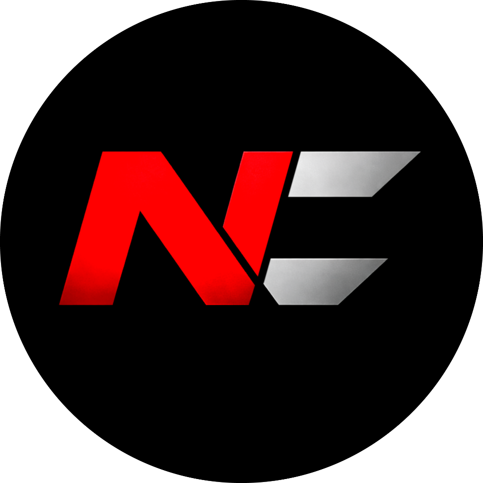
NeoCrime

Вітаємо у NeoCrime
Це дружнє та згуртоване українське ком'юніті, де кожен водій — важлива частина однієї команди. Нас об'єднують спільні цінності, взаємна підтримка та любов до дороги. Тут кожен знайде своє місце, допомогу та справжнє відчуття єдності.
Новини


Про нас
NeoCrime — це українська віртуальна транспортна компанія, заснована 8 січня 2026 року її власником F4DED. Незважаючи на те, що компанія є відносно новою, NeoCrime стрімко розвивається та продовжує зростати, об’єднуючи спільноту захоплених віртуальних водіїв.
Компанія об’єднує гравців, які поділяють пристрасть до вантажоперевезень, командної роботи та дослідження доріг у Euro Truck Simulator 2 та American Truck Simulator у мультиплеєрі через TruckersMP. NeoCrime прагне створити дружню та активну атмосферу, де водії можуть насолоджуватися грою разом, представляючи компанію на дорогах Європи.
NeoCrime активно бере участь у спільноті TruckersMP. Наші водії регулярно відвідують відкриті конвої та масштабні заходи, організовані іншими VTC, гідно представляючи компанію та налагоджуючи зв’язки всередині спільноти.
Окрім участі в зовнішніх заходах, NeoCrime також організовує власні конвої та івенти, об’єднуючи водіїв з різних компаній для спільних подорожей, живого спілкування та справжньої атмосфери віртуальних перевезень.
Однією з ключових цінностей NeoCrime є підтримка дружньої, взаємодопоміжної та активної спільноти. Компанія вітає водіїв з будь-яким рівнем досвіду — від новачків до досвідчених гравців, створюючи місце, де кожен може відчути себе частиною команди.
NeoCrime зосереджується на командній роботі, поважному стилі водіння та активній участі у житті спільноти. Завдяки регулярним конвоям, івентам та активностям компанія продовжує розвиватися та зміцнювати свою присутність у світі TruckersMP.
Сьогодні NeoCrime — це українська VTC, що швидко розвивається, постійно розширює свою спільноту, організовує нові заходи та формує сильну присутність у сфері віртуальних перевезень.
Наші партнери
Приєднуйся
до нашої
спільноти
NeoCrime — це українська VTC, де ми цінуємо командну гру, дисципліну на дорозі та дружню атмосферу. Ми об'єднуємо водіїв, для яких важлива якість перевезень і повага один до одного.
Подати заявку!Щоб стати частиною компанії, достатньо заповнити коротку заявку на дискорд сервері. Після розгляду з тобою зв’яжеться адміністрація та надасть подальші інструкції.
Ні, ми приймаємо як досвідчених водіїв, так і новачків. Головне — адекватність, бажання грати в команді та дотримання правил.
Так, NeoCrime регулярно організовує конвої та спільні поїздки в ETS2 MP. Це чудова можливість для спілкування та командної гри.
Основний напрям — Euro Truck Simulator 2 Multiplayer, але ми також підтримуємо спільні заїзди та події в інших форматах.
Галерея
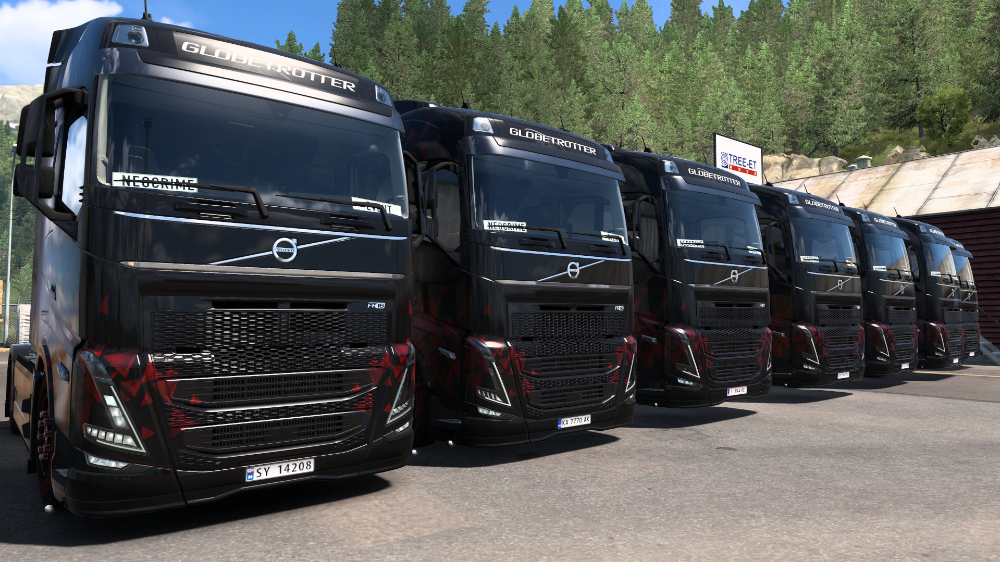
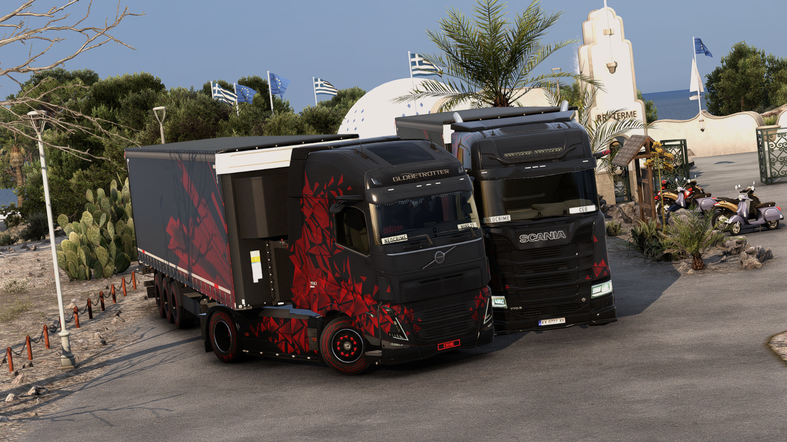
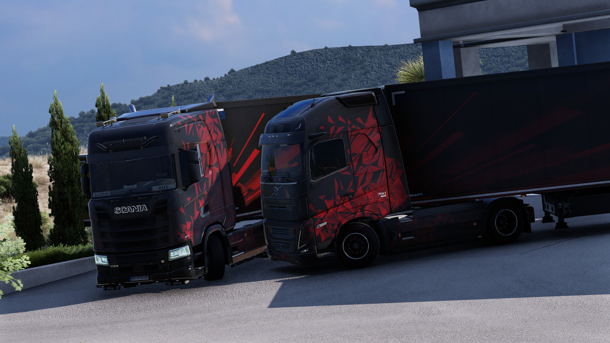
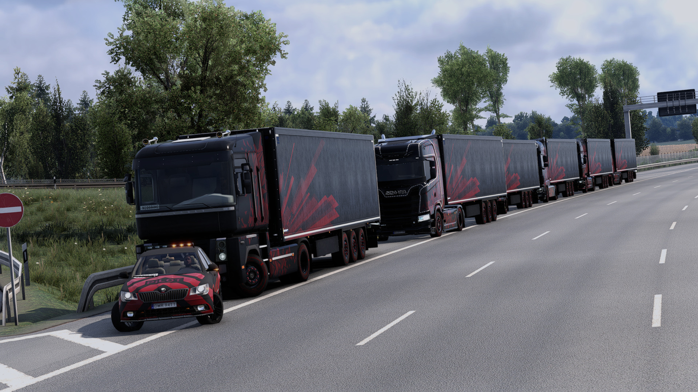
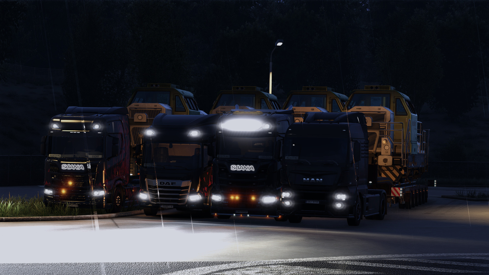
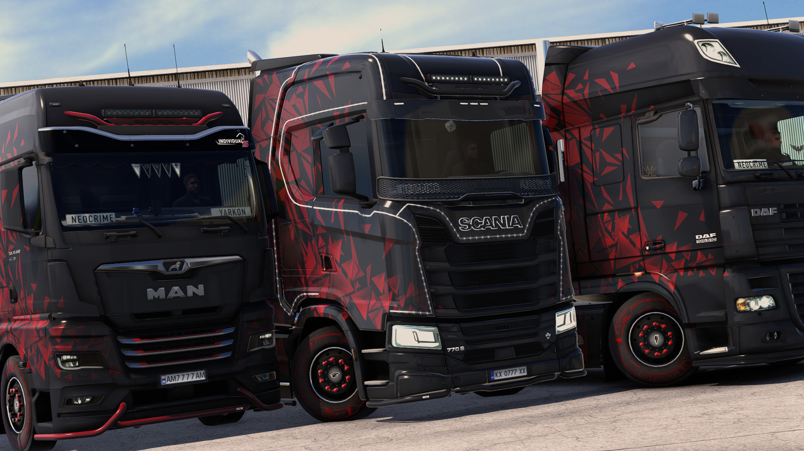
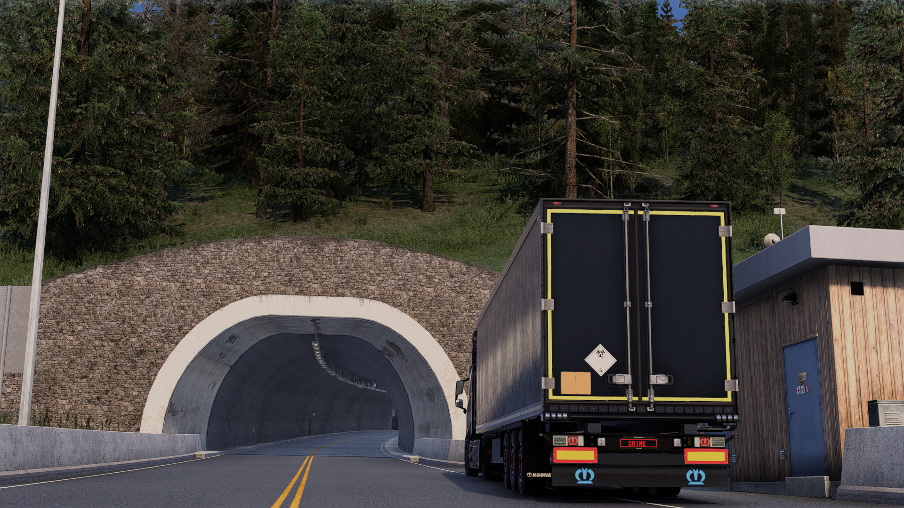
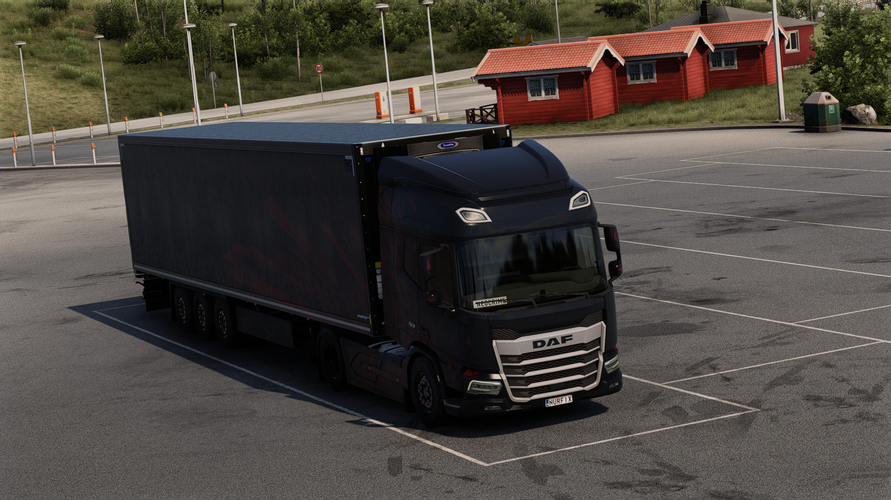
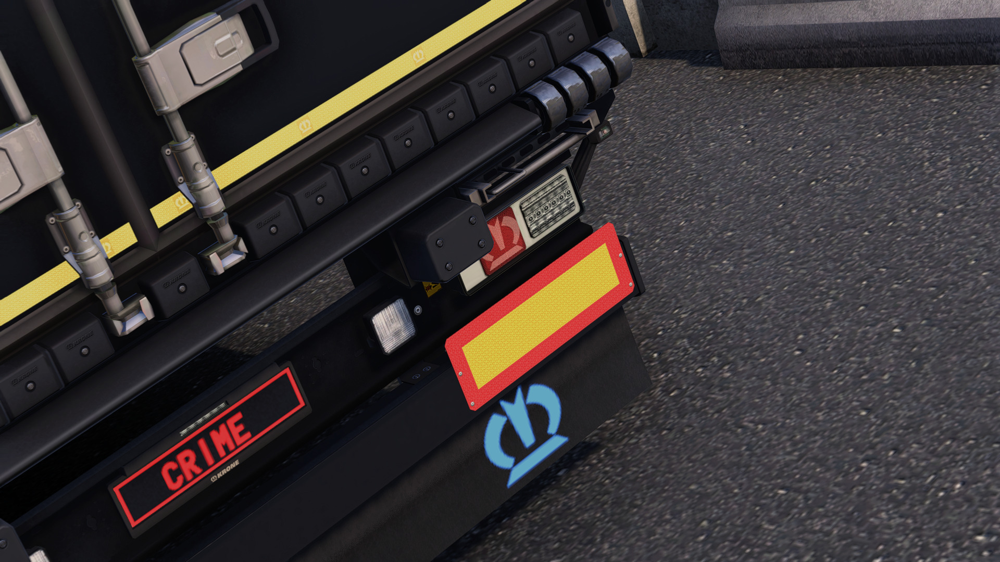
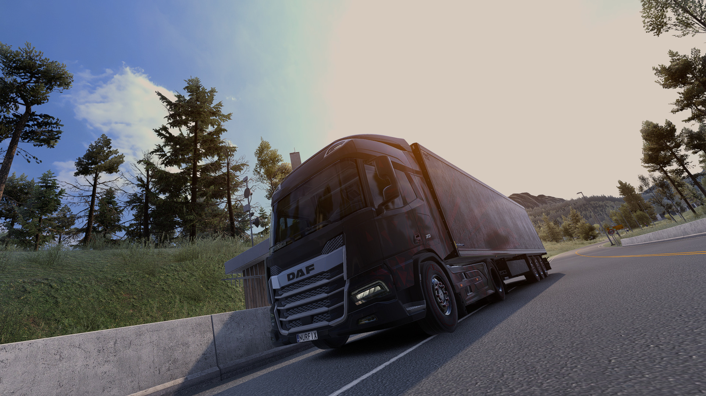